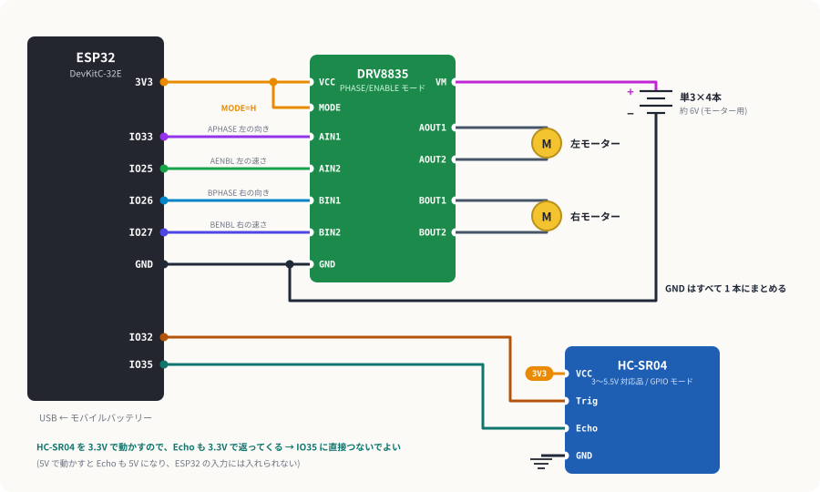
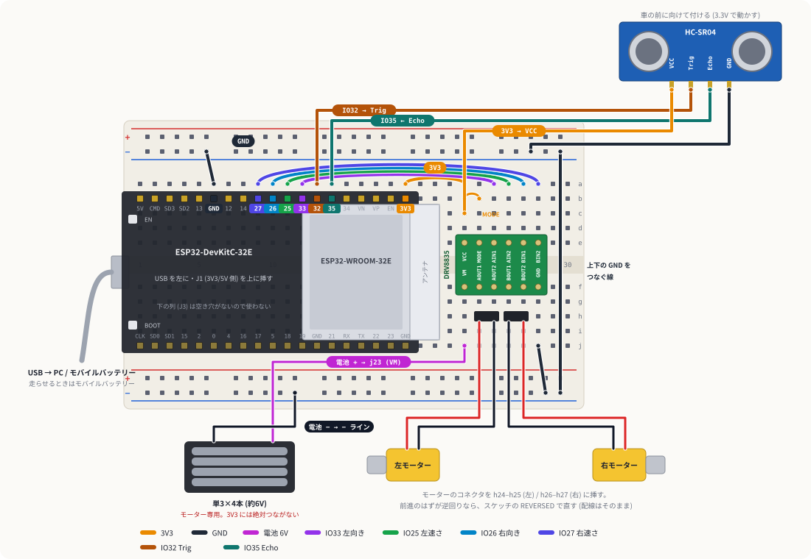

障害物回避カー
超音波センサーで前を見ながら走り、壁や箱に近づいたら少し下がって向きを変える車を作ります。モーターを回す (出力)、距離を測る (入力) をそれぞれ確かめてから、最後に「状態」を切り替えるスケッチでつなぎます。
1しくみ
モータードライバー DRV8835
ESP32 のピンはモーターを回せるほどの電流を出せないので、間に DRV8835 を入れます。MODE を H にすると「PHASE/ENABLE モード」になり、1 つのモーターを 2 本の線で操れます。PHASE で向き、ENABLE に PWM を入れて速さを決めます。
| MODE | ENABLE | PHASE | OUT1 | OUT2 | 動き |
|---|---|---|---|---|---|
| 1 | 0 | × | L | L | ブレーキ |
| 1 | 1 | 0 | H | L | 正転 |
| 1 | 1 | 1 | L | H | 逆転 |
秋月の AE-DRV8835-S のマニュアルより。ENABLE を 20kHz の PWM で細かく ON/OFF すると、平均の電圧が下がって遅く回ります。スケッチでは 6V の電池に対してデューティを 200/255 までに抑えています。
超音波センサー HC-SR04
Trig に 10µs 以上のパルスを入れると超音波を出し、反射が返ってくるまでの間 Echo が H になります。音速は約 343 m/s なので、H の時間 (µs) ÷ 58.3 = 距離 (cm) です。秋月の HC-SR04 は 3〜5.5V で動く版なので、3.3V で動かして Echo も 3.3V にし、ESP32 に直接入れます。データシートにある通り、測定の間は 200ms 以上あけます。
5V で動かすと Echo も 5V で出てきて、3.3V までの ESP32 の入力を壊します。VCC は必ず 3V3 から取ります。
走り方: 4 つの状態を切り替える

2組み立て
- DRV8835 にピンヘッダーをはんだ付けする。ヘッダーを先にブレッドボードに挿し、その上に基板を載せてはんだ付けすると、ピンがまっすぐに付く。
- 車体を組む。キットの説明書どおり。モーターは線が内側に来る向きで付ける (秋月の補足説明書より)。
- 載せる。上の板にブレッドボード (裏が両面テープ)、下の板に電池ボックス、前に HC-SR04、空いたところにモバイルバッテリー。
- 配線する。下の図と表のとおり。USB と電池のスイッチは切ったまま。
3配線
ESP32 は いつもの向き (USB を左、J1 列を上) で 1〜19 行に。DRV8835 は 23〜28 行に、e 列と f 列にまたがるように挿し、e 列側に VCC・MODE・AIN1・AIN2・BIN1・BIN2 (23 → 28 行) が来る向きにします。f 列側は VM・AOUT1・AOUT2・BOUT1・BOUT2・GND です。

| # | どこから | どこへ | 役割 |
|---|---|---|---|
| 1 | a6 (GND) | 上の − ライン | ESP32 の GND |
| 2 | a19 (3V3) | a23 | DRV8835 の VCC (ロジック電源) |
| 3 | b23 | b24 | MODE を H に (PHASE/ENABLE モード) |
| 4 | a12 (IO33) | a25 | AIN1 = APHASE (左の向き) |
| 5 | a11 (IO25) | a26 | AIN2 = AENBL (左の速さ) |
| 6 | a10 (IO26) | a27 | BIN1 = BPHASE (右の向き) |
| 7 | a9 (IO27) | a28 | BIN2 = BENBL (右の速さ) |
| 8 | j28 | 下の − ライン | DRV8835 の GND |
| 9 | 上の − ライン | 下の − ライン | GND どうしをつなぐ (29〜30 行のすき間を通す) |
| 10 | 電池ボックスの 赤 | j23 | VM (モーター電源 約 6V) |
| 11 | 電池ボックスの 黒 | 下の − ライン | 電池の − |
| 12 | 左モーターの 2 本 | h24 と h25 | AOUT1 / AOUT2 |
| 13 | 右モーターの 2 本 | h26 と h27 | BOUT1 / BOUT2 |
| 14 | c23 (3V3) | HC-SR04 VCC | オス-メス線。3.3V で動かす |
| 15 | a13 (IO32) | HC-SR04 Trig | オス-メス線 |
| 16 | a14 (IO35) | HC-SR04 Echo | オス-メス線 |
| 17 | 上の − ライン | HC-SR04 GND | オス-メス線 |
- USB と電池のスイッチは切ったまま配線を全部終えてから、電源を入れる (HC-SR04 のデータシートにも「GND が最初につながるように」とある)。
- 電池の + (約 6V) は j23 以外に挿さない。3V3 の列や上の電源ラインに触れると ESP32 が壊れる。
- 電池ボックスのリード線はより線なので、先をよくねじってから挿す。
4段階 1: モーターの向きを合わせる
車体を箱の上などに置いてタイヤを浮かせ、PC とは USB でつないだまま、電池のスイッチを入れて BOOT を押します。
- 「左だけ前進」で左のタイヤが前に回る (逆なら
LEFT_REVERSEDを反転) - 「右だけ前進」で右のタイヤが前に回る (逆なら
RIGHT_REVERSEDを反転) - 「左だけ」で右が回った → 左右のモーターの線を入れ替える (h24–h25 と h26–h27)
決まった LEFT_REVERSED / RIGHT_REVERSED は、段階 3 のスケッチにも同じ値を書きます。
5段階 2: 距離を測る
- 手を 10cm、30cm、1m と離すと、
cm:の値がだいたい合う - 何もない方向に向けると
cm:-1(反射が返ってこない) - ずっと
-1→ Trig と Echo が逆、または VCC / GND が来ていない
6段階 3: 走らせる
- 段階 1 で決めた
LEFT_REVERSED/RIGHT_REVERSEDを書いて、PC から書き込む。 - USB を PC から抜いて、モバイルバッテリーにつなぎ替える。電池のスイッチを入れる。
- 床に置いて BOOT を押すと走り出す。止めるときはもう一度 BOOT。
速すぎて止まりきれないなら SPEED_FORWARD を下げるか STOP_CM を大きく。距離は 200ms ごとにしか測れないので、速さ × 0.2 秒ぶんは「見ていない間に進む」と考えて決めます。
7うまくいかないとき
| 症状 | 見るところ |
|---|---|
| どちらのモーターも回らない | 電池のスイッチ、j23 の電池の +、DRV8835 のはんだ付け、上下の GND をつなぐ線 (#9) |
| 向きは変わるのに速さが変わらない / 変な動き | MODE が H になっているか (#3)。MODE が浮いていると別のモード (IN/IN) で動く |
| モーターが動き出すと ESP32 が再起動する | 電池が減っていないか。GND の共通 (#1, #8, #9) が抜けていないか |
| 走っているうちに ESP32 だけ止まる | モバイルバッテリーによっては、流れる電流が少ないと自動で切れる。別のバッテリーで試す |
| まっすぐ走らない | モーターの個体差。遅い側だけ速さを足す定数を作ると直せる |